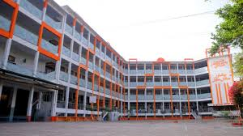

Peshawar Model School is the best school in Peshawar
A typical day in a Pakistani school starts with an assembly, including prayers, national anthem, and motivational talks. Students wear uniforms and follow a structured schedule of subjects such as Urdu, English, Mathematics, and Islamiat. In many schools, students also participate in activities like debates, sports, and cultural events. Respect for teachers is deeply rooted in the culture, and discipline is a major part of the school environment.
There is hope for improvement in Pakistan’s education system. The government and various NGOs are working to increase enrollment rates, improve teacher training, and provide better facilities. The use of digital tools and e-learning platforms is growing, especially after the COVID-19 pandemic. If the reforms continue and investments are made in education, schools in Pakistan can become more inclusive, modern, and effective in preparing students for the future.
| timimgs | contact | adress |
|---|---|---|